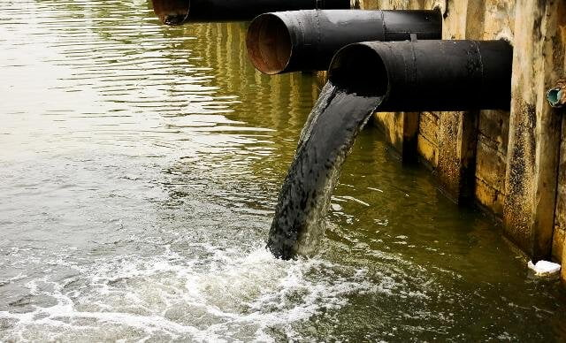
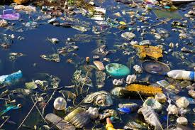
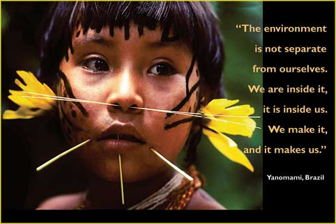

Clean Water for All - Raising Awareness for Water Pollution
Because everyone deserves access to clean and safe water
Water Pollution?
Water pollution is the contamination of water sources by substances which make the water unusable for drinking, cooking, cleaning, swimming, and other activities. Pollutants include chemicals, trash, bacteria, and parasites. All forms of pollution eventually make their way to water. Air pollution settles onto lakes and oceans. Land pollution can seep into an underground stream, then to a river, and finally to the ocean. Thus, waste dumped in a vacant lot can eventually pollute a water supply.
What we are Doing and What we have done so far?
Contamination of Drinking Water Sources
- Industrial Waste and Chemicals
- Agricultural Runoff
- Municipal Wastewater
- Urban Stormwater Runoff
- Oil Spills
- Natural Sources
- Cracks in Water Pipes
- Septic Systems
- Animal Waste
- Landfills

Degradation of Aquatic Ecosystems
- Biodiversity Loss: Human activities are driving aquatic species to extinction, disrupting food chains and ecological balance.
- Eutrophication and Harmful Algal Blooms: Excess nutrients from human activities trigger harmful algal blooms, contaminating water and endangering aquatic life.
- Hypoxia and Dead Zones: Algal decomposition depletes oxygen, creating dead zones where aquatic life cannot survive.
- Human Health Impacts: Contaminated water and algal toxins pose health risks, including waterborne diseases and shellfish poisoning.
- Economic and Ecosystem Services Loss: Fisheries decline, tourism suffers, and the loss of ecosystem services has far-reaching economic consequences.

Economic Impacts
- Increased Health Care Costs: Contaminated water leads to waterborne diseases, increasing healthcare costs for treatment and lost productivity.
- Tourism and Recreation Losses: Polluted waterways and beaches deter tourists and recreational activities, causing revenue losses for local businesses.
- Elevated Water Treatment Expenses: Treating polluted water to meet drinking water standards is costly, adding to the financial burden on municipalities and water utilities.
- Infrastructure Damage and Repair Costs: Corrosive pollutants damage water pipes and infrastructure, requiring expensive repairs and maintenance.
- Impacts on Agriculture and Irrigation: Water pollution can contaminate irrigation water, affecting crop yields and agricultural productivity.

And Why should we care?
Because...

What you can Practice from Yourside to Reduce Water Pollution?
Conserve Water
- Fix leaky faucets and pipes to prevent unnecessary water loss.
- Take shorter showers and install low-flow showerheads to reduce water usage.
- Use water-efficient appliances like washing machines and dishwashers.
- Practice drought-resistant landscaping techniques to minimize outdoor water consumption.
Reduce Plastic Waste
- Carry reusable water bottles, shopping bags, and food containers to avoid single-use plastics.
- Properly dispose of plastic waste by recycling or participating in community cleanups.
- Support businesses that use eco-friendly packaging and reduce their reliance on plastics.
Dispose of Waste Properly
- Never flush non-biodegradable items like wipes, paper towels, and sanitary products down the toilet.
- Dispose of hazardous household chemicals and medications at designated collection centers.
- Avoid pouring grease, oil, or other contaminants down the drain.
Use Eco-friendly Products
- Choose cleaning products and personal care items that are biodegradable and phosphate-free to minimize their impact on water quality.
- Avoid using pesticides and fertilizers in your yard, as these chemicals can run off into nearby water bodies.
- Support businesses that prioritize sustainability and use environmentally friendly practices.
Spread Awareness
- Educate friends, family, and neighbors about water pollution and the importance of conservation.
- Encourage others to adopt eco-friendly practices and make informed choices that protect water resources.
- Support organizations dedicated to water conservation and environmental protection.
Solutions for a Cleaner Future: Empowering Change
- Wastewater Treatment
- Reducing Plastic Waste
- Water Conservation
- Water-efficient Toilets
- Septic Tanks
- Proper Disposal of Non-Biodegradable Items
- Stormwater Management
- Green Agriculture & Wetlands
- Denitrification
- Ozone Wastewater Treatment